БЕРЕЖНЫЙ ПОДХОД К ЛЕЧЕНИЮ НАСМОРКА
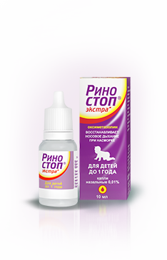капли
для детей с первых
дней жизни до 1 года
для детей с первых
дней жизни до 1 года
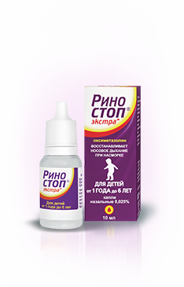капли
для детей
с 1 года до 6 лет
для детей
с 1 года до 6 лет
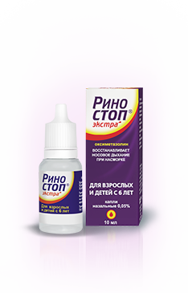капли
для детей
с 6 лет и взрослых
для детей
с 6 лет и взрослых
ДОСТОИНСТВА
КАПЕЛЬ РИНОСТОП® ЭКСТРА
КАПЕЛЬ РИНОСТОП® ЭКСТРА
Бережно:
капли – специально для детей
капли – специально для детей
Активен через несколько минут после применения и до 12 часов**инструкция по медицинскому применению препарата Риностоп® Экстра

Доступен по цене* *IMS, категория препаратов для лечения насморка (местные), январь-июль 2017
КАПЛИ РИНОСТОП ® ЭКСТРА ЭТО
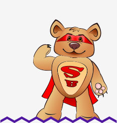
УВЕРЕННОСТЬ
Благодаря сосудосуживающему действию РИНОСТОП® ЭКСТРА при нанесении на воспаленную слизистую оболочку полости носа способствует уменьшению ее отечности, заложенности носа, выделений из носа, тем самым помогая уменьшить симптомы ринита и облегчить носовое дыхание
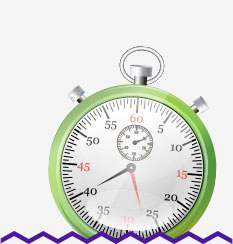
СКОРОСТЬ
Согласно инструкции по медицинскому применению капель РИНОСТОП® ЭКСТРА, после нанесения на слизистую носа активность РИНОСТОП® ЭКСТРА начинается через несколько минут и продолжается до 12 часов.
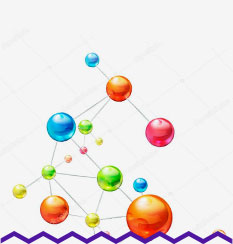
МОЛЕКУЛЫ СРЕДСТВ
Активная молекула – МНН оксиметазолин – обладает наиболее продолжительным терапевтической активностью – до 12 часов, в отличие от других МНН, применяемых для лечения насморка (МНН нафазолин, МНН ксилометазолин, МНН фенилэфрин)** Заплатников А.Л. Топические деконгестанты в педиатрической практике: безопасность и клиническая эффективность. Педиатрия №6, 2006 г, с. 69-75.
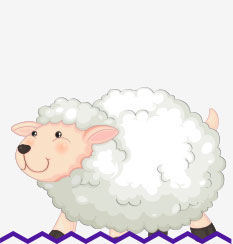
МЯГКОСТЬ
Действующее вещество - МНН оксиметазолин - обладает более мягким влиянием на слизистую оболочку носа по сравнению с МНН нафазолин* *4.Геппе Н.А., Озерская И.В. Факторы, влияющие на состояние цилиарного эпителия и мукоцилиарный клиренс. Эффективная фармакотерапия. Пульмонология и оторинология. №2, 2011.
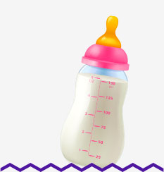
СПЕЦИАЛЬНО ДЛЯ ДЕТЕЙ
Капельная форма выпуска РИНОСТОП® ЭКСТРА создана специально для нежного детского носика, т.к. капли позволяют бережно и, поэтому, безопасно ввести препарат в маленький носик ребенка, минимизирует тем самым риск повреждения слизистой оболочки миниатюрного носика ребенка

КОМФОРТ
При местном применении в терапевтических концентрациях, согласно возрастной дозировке и рекомендуемым схемам лечения, РИНОСТОП® ЭКСТРА не вызывает гиперемию и раздражение слизистой оболочки полости носа
ЭКОНОМИЯ СРЕДСТВ
Для более гибкого подхода к лечению созданы отдельные концентрации РИНОСТОП® ЭКСТРА для разных возрастных групп:
капли назальные 0,01% - 10 мл: для детей с первых дней жизни
капли назальные 0,025% - 10 мл: для детей с 1 года до 6 лет
капли назальные 0,05% - 10 мл: для детей с 6 лет и взрослых

Беременность
В отличие от других МНН (нафазолин, ксилометазолин), действующее вещество РИНОСТОП® ЭКСТРА - МНН оксиметазолин - возможно к применению у беременных после консультации с врачом** Согласно ИМП препаратов с данными МНН представленными на сайте ГРЛС от 24.07.17.
ЭКОНОМИЯ
Доступная цена** IMS, категория препаратов для лечения насморка (местные), МНН оксиметазолин, январь-июль 2017 г.
КАК ИСПОЛЬЗОВАТЬ капли РИНОСТОП ®Экстра для детей:
Для большей эффективности лечения предварительно (перед использованием) препарата необходимо прочистить носовой ход путем высмаркивания, очищения с помощью аспиратора (у маленьких детей, не способных к самостоятельному отсмаркиванию), либо промыванием носовой полости средством на основе морской воды, например РИНОСТОП® АКВА НОРМ (для взрослых и детей с 3 лет) или РИНОСТОП® АКВА БЕБИ (для детей с первых дней жизни)
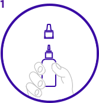
Взять капли РИНОСТОП® ЭКСТРА в соответствии с возрастной дозировкой. Снять защитный колпачок с флакона
Положить ребенка на спину. У детей более старшего возраста и у взрослых запрокинуть голову
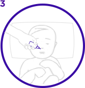
Ввести по 1-2 капли препарата в каждый носовой ход (детям в возрасте до 4-х недель применять по 1 капле) 2-3 раза в сутки
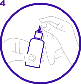
Очистить насадку после использования и закрыть флакон защитным колпачком